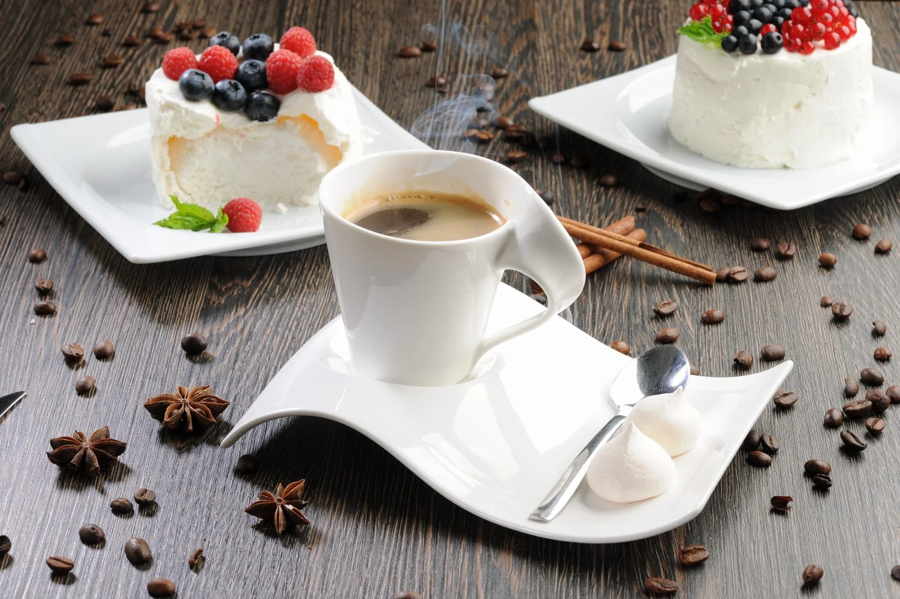

Ресторан Кофевариум


Веб-сайт ресторана
+375 17 200-28-32
Минск, ул. Мясникова, 29
- Понедельник: 10:00 - 21:00
- Вторник: 10:00 - 21:00
- Среда: 10:00 - 21:00
- Четверг: 10:00 - 21:00
- Пятница: 10:00 - 21:00
- Суббота: 10:00 - 21:00
- Воскресенье: 10:00 - 21:00
ОПИСАНИЕ:
СРЕДНИЙ СЧЁТ:
ТИП КУХНИ:
СПЕЦИАЛИЗИРОВАННОЕ МЕНЮ:
ВРЕМЯ ПРИЕМА ПИЩИ:
УСЛУГИ: